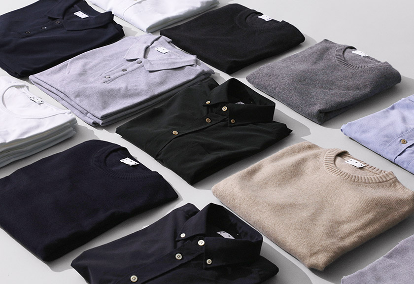

Asket
20 July 2017, Friday
ASKET is a Swedish menswear label founded in 2015 by August Bard Bringéus and Jakob Dwarsky in hopes to modernize garment sizing for the everyday wardrobe essentials. With a goal to give customers the best fit, the company offers 15 sizes instead of 5. Basic clothing sizes range from x-small to x-large, but within each of these standard sizes ASKET offers a short, regular, and long fit. One other thing about this company that really stands out to me is the transparency behind their products. It’s no secret how much money goes into their products and the fair prices they set for them make it even better.

In an industry that has 52 micro-seasons a year, ASKET offers one permanent collection. I love the fact that no matter what time of the year it is, I know my favorite items will always be stocked. Their focus on continual improvement of every product shows just how much quality and effort is put into their collection. Every piece they offer is an essential to every man’s wardrobe which makes this brand all the more worth the money. Below are some of my favorite pieces the brand has to offer: